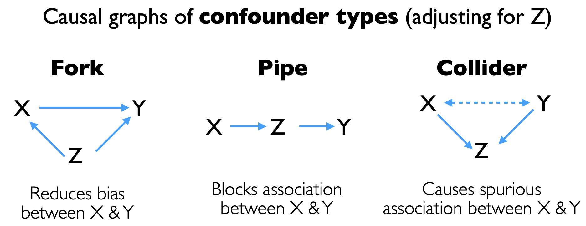

Modeling for Explanation#
Previously, we saw how modeling for prediction involved the selection of covariates guided by metrics for out-of-sample prediction.
In modeling for explanation, we seek to estimate the effects of covariates on an outcome of interest, while minimizing confounders and biases
We need to consider biases like collinearity from correlated covariates as they impact the interpretation of the effect sizes
We need to consider the causal relationships among the covariates so we can identify confounders and decide which covariates to include/exclude
Here, we will look at how we can make use of causal graphs to identify biases
Causal graphs#
Causal models can be represented as directed graphs where
The outcome and covariates are represented as
nodesThe causal links are represented as directional
edges(arrows)
In these models, the graphs are acyclic (known as directed acyclic graphs or DAGs) where the paths connecting the nodes do not form a cycle
Confounder types#
Let us consider a minimal causal DAG with the following variables
Xis the exposure covariateYis the outcome of interestZis another covariate
Using this minimal DAG, we can identify the following confounder types

We will explore these confounder types using simulated datasets
Fork
Pipe
Collider
We will see how we can model the causal graphs using the ggdag library as well as a web-based tool http://www.dagitty.net/dags.html
library(tidyverse)
library(ggdag) # for causal dags
── Attaching core tidyverse packages ───────────────────────────── tidyverse 2.0.0 ──
✔ dplyr 1.1.1 ✔ readr 2.1.4
✔ forcats 1.0.0 ✔ stringr 1.5.0
✔ ggplot2 3.4.2 ✔ tibble 3.2.1
✔ lubridate 1.9.2 ✔ tidyr 1.3.0
✔ purrr 1.0.1
── Conflicts ─────────────────────────────────────────────── tidyverse_conflicts() ──
✖ dplyr::filter() masks stats::filter()
✖ dplyr::lag() masks stats::lag()
ℹ Use the conflicted package (<http://conflicted.r-lib.org/>) to force all conflicts to become errors
Attaching package: ‘ggdag’
The following object is masked from ‘package:stats’:
filter
We will define a convenience table_lm function to print the regression tables using stargazer
table_lm <- function(...) {
capture.output(stargazer::stargazer(..., ci=TRUE, type="html")) %>%
paste(collapse="") %>% IRdisplay::display_html()
}
1. Fork#
In this example, we have a synthetic dataset with age, smoking and COPD variables
ageyearssmokingamount (arbitrary units)COPDseverity (arbitrary units)
set.seed(1896) # Reproducibility
n <- 1000 # Sample Size
# synthetic model
age <- rnorm(n, mean = 20, sd = 15)
smoking <- 150 - age + rnorm(n)
COPD <- 0.5 * age + 0.1 * smoking + rnorm(n)
data_fork <- tibble(age=age,
smoking=smoking,
COPD=COPD)
head(data_fork)
| age | smoking | COPD |
|---|---|---|
| <dbl> | <dbl> | <dbl> |
| 50.50475 | 100.3208 | 33.91562 |
| 22.01991 | 127.1552 | 24.42866 |
| 28.96818 | 121.8219 | 27.22487 |
| 20.95888 | 128.7240 | 23.31160 |
| 23.25103 | 128.2533 | 23.47388 |
| 20.51135 | 129.7942 | 22.81942 |
We are interested in finding out the effect of smoking on COPD
We can build an initial model looking at the effect of smoking on COPD
model_fork <- lm(COPD ~ smoking, data_fork)
table_lm(model_fork)
| Dependent variable: | |
| COPD | |
| smoking | -0.401*** |
| (-0.405, -0.396) | |
| Constant | 75.111*** |
| (74.518, 75.704) | |
| Observations | 1,000 |
| R2 | 0.968 |
| Adjusted R2 | 0.968 |
| Residual Std. Error | 1.080 (df = 998) |
| F Statistic | 30,248.220*** (df = 1; 998) |
| Note: | *p<0.1; **p<0.05; ***p<0.01 |
Curiously, we see that the amount of smoking reduces COPD, contrary to what we expect based on our understanding of pathophysiology
To understand this, we can build a DAG relating the 3 variables smoke, age and COPD, based on our background knowledge
smoke(exposure) is linked toCOPD(outcome)ageis linked to bothsmokeandCOPD
We use the dagify function to build the graph and the ggdag function to visualize it
dag_fork <- dagify(smoke ~ age,
COPD ~ age,
COPD ~ smoke,
exposure = "smoke",
outcome = "COPD")
# set plot dimensions
options(repr.plot.width=6, repr.plot.height=6)
ggdag(dag_fork, layout="auto", node_size = 20, text_size = 3) + theme_dag_grey()
We can use the ggdag_adjustment_set to indicate possible confounders that should be adjusted for by including them in the model
# set plot dimensions
options(repr.plot.width=8, repr.plot.height=6)
ggdag_adjustment_set(dag_fork) + theme_dag_gray()
We can see that age is a possible confounder and we can include this covariate in our model to adjust for it
Let us also model this in http://www.dagitty.net/dags.html
model_fork_adjusted <- lm(COPD ~ smoking + age, data_fork)
table_lm(model_fork, model_fork_adjusted)
| Dependent variable: | ||
| COPD | ||
| (1) | (2) | |
| smoking | -0.401*** | 0.082** |
| (-0.405, -0.396) | (0.020, 0.144) | |
| age | 0.484*** | |
| (0.422, 0.546) | ||
| Constant | 75.111*** | 2.694 |
| (74.518, 75.704) | (-6.626, 12.015) | |
| Observations | 1,000 | 1,000 |
| R2 | 0.968 | 0.974 |
| Adjusted R2 | 0.968 | 0.974 |
| Residual Std. Error | 1.080 (df = 998) | 0.973 (df = 997) |
| F Statistic | 30,248.220*** (df = 1; 998) | 18,750.910*** (df = 2; 997) |
| Note: | *p<0.1; **p<0.05; ***p<0.01 | |
We can see now that when age is adjusted for, the conclusion is different and shows that smoking does increase COPD
2. Pipe#
In this example, we have a synthetic dataset with exercise, HR and sysBP variables
exerciseintensity (arbitrary units)HRbeats/minsysBPmmHg
set.seed(1896) # Reproducibility
n <- 1000 # Sample Size
# synthetic model
exercise <- rnorm(n)
HR <- 5 * exercise + rnorm(n) + 60
sysBP <- 2 * HR + rnorm(n)
data_pipe <- tibble(exercise=exercise,
HR=HR,
sysBP=sysBP)
head(data_pipe)
| exercise | HR | sysBP |
|---|---|---|
| <dbl> | <dbl> | <dbl> |
| 2.03365024 | 70.99385 | 140.6189 |
| 0.13466066 | 59.84845 | 120.4001 |
| 0.59787859 | 63.77945 | 128.1175 |
| 0.06392520 | 60.00253 | 119.9648 |
| 0.21673542 | 62.58798 | 124.1990 |
| 0.03408985 | 60.47600 | 120.5363 |
We are interested to find out the effect of exercise on sysBP
In this case, let us suppose we build a model that includes all the covariates so that we can estimate the effect of exercise on sysBP
model_pipe_adjusted <- lm(sysBP ~ exercise + HR, data_pipe)
table_lm(model_pipe_adjusted)
| Dependent variable: | |
| sysBP | |
| exercise | 0.122 |
| (-0.197, 0.440) | |
| HR | 1.982*** |
| (1.920, 2.044) | |
| Constant | 1.091 |
| (-2.638, 4.820) | |
| Observations | 1,000 |
| R2 | 0.991 |
| Adjusted R2 | 0.991 |
| Residual Std. Error | 0.973 (df = 997) |
| F Statistic | 54,402.820*** (df = 2; 997) |
| Note: | *p<0.1; **p<0.05; ***p<0.01 |
Interestingly, now we see that HR has an effect on sysBP as expected, but exercise does not have a significant effect, contrary to what we know about physiological responses
To understand this, let us build a DAG linking exercise, HR and sysBP using the dagify function
exercise(exposure) is linked toHRHRis linked tosysBP(outcome)
We can visualize the DAG using the ggdag function
library(ggdag)
# set plot dimensions
options(repr.plot.width=6, repr.plot.height=6)
dag_pipe <- dagify(sysBP ~ HR,
HR ~ exercise,
exposure = "exercise",
outcome = "sysBP")
ggdag(dag_pipe, layout = "auto", node_size = 20, text_size = 3) + theme_dag_grey()
We use the ggdag_adjustment_set to visualize any covariates that should be adjusted for
# set plot dimensions
options(repr.plot.width=8, repr.plot.height=6)
ggdag_adjustment_set(dag_pipe) + theme_dag_grey()
We see that there are no covariates that have been recommended for adjustment
Let us see what happens when we adjust for HR using the ggdag_adjust function
# set plot dimensions
options(repr.plot.width=8, repr.plot.height=6)
ggdag_adjust(dag_pipe,var="HR") + theme_dag_grey()
We see that adjusting for HR would actually block the path from exercise to sysBP, making it impossible to estimate the effect of exercise on sysBP
Let us also model this in http://www.dagitty.net/dags.html
We can build another model where we exclude HR and compare it to our initial full model
model_pipe <- lm(sysBP ~ exercise, data_pipe)
model_pipe_adjusted <- lm(sysBP ~ exercise + HR, data_pipe)
table_lm(model_pipe_adjusted, model_pipe)
| Dependent variable: | ||
| sysBP | ||
| (1) | (2) | |
| exercise | 0.122 | 10.090*** |
| (-0.197, 0.440) | (9.955, 10.226) | |
| HR | 1.982*** | |
| (1.920, 2.044) | ||
| Constant | 1.091 | 119.984*** |
| (-2.638, 4.820) | (119.850, 120.117) | |
| Observations | 1,000 | 1,000 |
| R2 | 0.991 | 0.955 |
| Adjusted R2 | 0.991 | 0.955 |
| Residual Std. Error | 0.973 (df = 997) | 2.156 (df = 998) |
| F Statistic | 54,402.820*** (df = 2; 997) | 21,355.460*** (df = 1; 998) |
| Note: | *p<0.1; **p<0.05; ***p<0.01 | |
We can now see that exercise does increase increase sysBP
3. Collider#
In this example, we have a synthetic dataset with DKA, AMI and ICU variables
DKArisk score (arbitrary unit)AMIrisk score (arbitrary unit)ICUadmission (1=yes, 0=no)
set.seed(1896) # Reproducibility
n <- 1000 # Sample Size
DKA <- rnorm(n)^2
AMI <- rnorm(n)^2
ICU <- ((DKA > 1) | (AMI > 1))
luck <- rbinom(n, size = 1, prob = 0.05)
ICU <- (1 - luck) * ICU + luck * (1 - ICU)
data_collider <- tibble(DKA=DKA,
AMI=AMI,
ICU=factor(ICU))
head(data_collider)
| DKA | AMI | ICU |
|---|---|---|
| <dbl> | <dbl> | <fct> |
| 4.135733296 | 0.68160927 | 1 |
| 0.018133494 | 0.68037601 | 0 |
| 0.357458803 | 0.62418544 | 0 |
| 0.004086431 | 0.10054905 | 0 |
| 0.046974242 | 2.26293810 | 1 |
| 0.001162118 | 0.09336329 | 0 |
We are interested to find out the effect of DKA on AMI
Let us build an initial model looking at the association between DKA and AMI by including the ICU covariate
model_collider_adjusted <- lm(AMI ~ DKA + ICU, data_collider)
table_lm(model_collider_adjusted)
| Dependent variable: | |
| AMI | |
| DKA | -0.181*** |
| (-0.239, -0.124) | |
| ICU1 | 1.276*** |
| (1.118, 1.435) | |
| Constant | 0.442*** |
| (0.337, 0.548) | |
| Observations | 1,000 |
| R2 | 0.200 |
| Adjusted R2 | 0.199 |
| Residual Std. Error | 1.144 (df = 997) |
| F Statistic | 124.904*** (df = 2; 997) |
| Note: | *p<0.1; **p<0.05; ***p<0.01 |
Interestingly, DKA decreases AMI risk in this model, contrary from what we may expect from pathophysiology
To understand this, let us build a causal graph linking AMI, DKA and ICU using the dagify function
DKA(exposure) is linked toAMI(outcome)DKAis linked toICUadmissionAMIis linked toICUadmission
We can visualize the DAG using the ggdag function
dag_collider <- dagify(ICU ~ DKA,
ICU ~ AMI,
AMI ~ DKA,
exposure = "DKA",
outcome = "AMI")
# set plot dimensions
options(repr.plot.width=6, repr.plot.height=6)
ggdag(dag_collider, layout = "circle", node_size = 20) + theme_dag_grey()

We use the ggdag_adjustment_set to visualize any covariates that should be adjusted for
# set plot dimensions
options(repr.plot.width=8, repr.plot.height=6)
ggdag_adjustment_set(dag_collider) + theme_dag_grey()
We see that there are no covariates that have been recommended for adjustment
Let us see what happens when we adjust for ICU using the ggdag_adjust function
# set plot dimensions
options(repr.plot.width=8, repr.plot.height=6)
ggdag_adjust(dag_collider, var = "ICU") + theme_dag_grey()
We can see that the adjustment of ICU admissions will spuriously lead to an association between DKA and AMI even when there is no effect
Let us also model this in http://www.dagitty.net/dags.html
We can build a model where the ICU covariate is excluded and compare it to the adjusted model
model_collider <- lm(AMI ~ DKA, data_collider)
model_collider_adjusted <- lm(AMI ~ DKA + ICU, data_collider)
table_lm(model_collider_adjusted, model_collider)
| Dependent variable: | ||
| AMI | ||
| (1) | (2) | |
| DKA | -0.181*** | 0.023 |
| (-0.239, -0.124) | (-0.034, 0.081) | |
| ICU1 | 1.276*** | |
| (1.118, 1.435) | ||
| Constant | 0.442*** | 0.919*** |
| (0.337, 0.548) | (0.822, 1.016) | |
| Observations | 1,000 | 1,000 |
| R2 | 0.200 | 0.001 |
| Adjusted R2 | 0.199 | -0.0004 |
| Residual Std. Error | 1.144 (df = 997) | 1.278 (df = 998) |
| F Statistic | 124.904*** (df = 2; 997) | 0.640 (df = 1; 998) |
| Note: | *p<0.1; **p<0.05; ***p<0.01 | |
We can see that when we do not adjust for ICU covariate, the association between AMI and DKA is no longer significant

Exercise - Modeling for explanation#
For this exercise, we will use a dataset investigating the effect of smoking on FEV lung function from a study in 1979 on 606 children (6-17 years old)
age: yearsfev: forced expiratory volume (L)height: inchesgender: m = male, f = femalesmoking: 1 = smoker, 0 = non-smoker
library(tidyverse)
data_fev <- read_tsv("https://raw.githubusercontent.com/kennethban/dataset/main/fev.txt") %>%
mutate(gender = as.factor(gender),
smoking = as.factor(smoking),
height = height * 2.54) # convert to cm
head(data_fev)
Rows: 606 Columns: 5
── Column specification ─────────────────────────────────────────────────────────────
Delimiter: "\t"
chr (1): gender
dbl (4): age, fev, height, smoking
ℹ Use `spec()` to retrieve the full column specification for this data.
ℹ Specify the column types or set `show_col_types = FALSE` to quiet this message.
| age | fev | height | gender | smoking |
|---|---|---|---|---|
| <dbl> | <dbl> | <dbl> | <fct> | <fct> |
| 9 | 1.708 | 144.78 | f | 0 |
| 8 | 1.724 | 171.45 | f | 0 |
| 7 | 1.720 | 138.43 | f | 0 |
| 9 | 1.558 | 134.62 | m | 0 |
| 9 | 1.895 | 144.78 | m | 0 |
| 8 | 2.336 | 154.94 | f | 0 |
We will use the table_lm convenience function for displaying tables of linear models
table_lm <- function(...) {
capture.output(stargazer::stargazer(..., ci=TRUE, type="html")) %>%
paste(collapse="") %>% IRdisplay::display_html()
}
Part 1#
Build a model using lm and store it as my_fit
fev: response variablesmoking: covariate
Print the table using table_lm convenience function
Interpret the coefficient
# start here
Show code cell content
# solution
my_fit <- lm(fev ~ smoking, data_fev)
table_lm(my_fit)
| Dependent variable: | |
| fev | |
| smoking1 | 0.605*** |
| (0.391, 0.820) | |
| Constant | 2.635*** |
| (2.567, 2.703) | |
| Observations | 606 |
| R2 | 0.048 |
| Adjusted R2 | 0.047 |
| Residual Std. Error | 0.810 (df = 604) |
| F Statistic | 30.654*** (df = 1; 604) |
| Note: | *p<0.1; **p<0.05; ***p<0.01 |
Part 2#
Use http://www.dagitty.net/dags.html to build a plausible causal DAG
smoking: exposure variablefev: outcome variableageheightgender
After building the causal DAG
Identify the minimal set of covariates to adjust for to control for confounders
Fit the adjusted model using
lmand store it asmy_fit_adjusted
Print both my_fit and my_fit_adjusted using table_lm convenience function
Interpret the coefficients
# start here
Show code cell content
# solution
my_fit_adjusted <- lm(fev ~ smoking + age + gender + height, data_fev)
table_lm(my_fit, my_fit_adjusted)
| Dependent variable: | ||
| fev | ||
| (1) | (2) | |
| smoking1 | 0.605*** | -0.129** |
| (0.391, 0.820) | (-0.249, -0.009) | |
| age | 0.075*** | |
| (0.055, 0.096) | ||
| genderm | 0.145*** | |
| (0.078, 0.213) | ||
| height | 0.043*** | |
| (0.039, 0.047) | ||
| Constant | 2.635*** | -4.817*** |
| (2.567, 2.703) | (-5.291, -4.343) | |
| Observations | 606 | 606 |
| R2 | 0.048 | 0.754 |
| Adjusted R2 | 0.047 | 0.752 |
| Residual Std. Error | 0.810 (df = 604) | 0.413 (df = 601) |
| F Statistic | 30.654*** (df = 1; 604) | 460.162*** (df = 4; 601) |
| Note: | *p<0.1; **p<0.05; ***p<0.01 | |